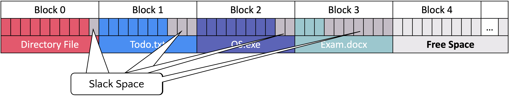

Introduction
This section was made by Sandy Bultena for Programming in Science (Fall 2024). All credits and thanks to her.
Computers only think in terms of 1s and 0s (binary). Every bit of information on your computer is coded in binary and the your computer will translate one set of of 1s and 0s to another when displaying information on your screen.

What’s a file?
On a computer, you probably have pictures, word documents, saved video games, applications, code, plus a whole lot more. It would be very difficult if every time you opened Word, every document that you ever wrote was all smushed together.
So, to make your life easier, your computer organizes data into discrete elements, called files. Each file has the data for one thing only, for example, one picture, one Word Document, one application, etc.
In the old days, files used to be a document that was printed on paper. Today, most people refer to files as a document of some kind (picture, code, Word, etc) that is stored on your computer.
Computer file-system
To make the transition from storing files on paper, in paper folders, in filing cabinets, to storing files on computers easier, the powers that be decided to use the same names, i.e. files and folders.
NOTE: before computers were used everywhere, folders used to be called directories and the words mean EXACTLY the same thing, so if your teachers forget, and says “directory”, remember that they actually mean folder.
So, in a folder you can have files and other folders.
Since folders are not longer physical things, we need a way to envision them.
In short, folders (or directories) are organized into a tree format.
My Documents
| --- English
| |-> Assignment 1.docx
| |-> Assignment 2.docx
| --- Programming
| | --- Assignment 1
| | |-> Instructions.pdf
| | |-> code.py
| | |-> output.txt
| | |--- Assignment 2
| | | | -> Instructions.pdf
| | | | -> code.py
| | | | -> output.csv
What is a File Extension?
The file extension is defined as the last bit of a file name that follows the last dot (.) Kinda of like a last name. It determines the file format of each file.
Example: code.py has a file extension .py. A word document typically has the extension .docx, so the filename is typically assignment 1.docx.
Why don’t I see them in File Explorer?
The developers at Microsoft have designed File Explorer to be easy(?) for non-programmers to use, and so by default they hide the file extension.
But, you are now a programmer, and you absolutely need to know what the file extensions are…
Please follow the instructions in: MS Windows Support - Show file extensions
Why do we use File Extensions?
The file extensions give a hint to the operating system (Windows/Linux/Mac) as to what type of data is in the file. So if the extension is .png then the operating system knows that it is a picture, and if you double click the filename in File Explorer, it will call the appropriate program that can show you the picture.
Likewise if the file extension is .docx, double clicking the file in File Explorer will open Microsoft Office which in turn will read the file and display it to you.
Example: Bitmap Photo (BMP)
A BMP file starts with the letters BM, followed by metadata fields such as the file size, offset, header size, photo width and height, planes and color depth. The actual pixel data comes after the metadata.

Metadata of a BMP photo. Source and details: BMP file format
File Systems
A file system is the method an operating system uses to store, organize, and manage files on a storage device.
Saving Files to Storage Devices
When you save a file, the file system decides where and how the data is stored on the device. It keeps track of:
- File names and locations
- File size and type
- Date created or modified
- Access permissions (who can read or edit the file)
The file system acts like a digital librarian, keeping everything in order so files can easily be found and opened later. Without a file system, data on a storage device would be unorganized, making it impossible to locate or retrieve files.
Common file systems include:
- NTFS: used by Windows
- APFS: used by macOS
- EXT4: used by Linux
How the File System Manages Files and Directories
- Organizes data into files with names, types, and sizes.
- Uses directories (folders) to group and arrange files.
- Creates a hierarchical structure starting from the root directory.
- Tracks each file’s location using allocation tables or indexes (e.g., FAT, inodes).
- Stores metadata: creation date, permissions, size, etc.
- Controls access with file permissions (read, write, execute).
- Supports operations like create, open, move, rename, and delete.
Windows File Systems
- NTFS (New Technology File System)
- Supports partition sizes up to 16 exabytes (in theory).
- More security features and extended attributes than FAT.
- FAT32 (File Allocation Table 32-bit)
- Supports partition sizes up to 2 terabytes.
- Limits file size to 4 GB.
- Used by Windows XP and older versions.
How File Systems Work
Storage in Early Computers
- In the early days of computing, when systems could perform only one task at a time, storage was managed as one continuous file.
- Data was written sequentially, starting from the beginning of the storage medium.
- As the computer produced output, data filled the storage in order, until the entire capacity was used.
- There was no concept of folders or file systems: all data existed as a single stream of information.
A Simple File System
As computing power and storage capacity grew, more than one file needed to be stored at the same time. How would we store multiple files?
- The simplest solution is to store files back-to-back.
- But how would the computer know where each file begins and ends?
- Storage devices have no idea what a file is. They are just a mechanism for storing data.
Solution: The Directory File
A directory file is a special file added to the storage so the OS can find the files on the disk.
- It is kept at location zero (before any data).
- It includes the names of all the files in storage (e.g., the file
Todo.txt has the filename Todo and the extension txt).
The directory file also stores metadata about each file, including where it begins and how long it is:
If a file is added, removed, or renamed, the information in the directory file must be updated.
Main Issue with the Simple File System
Stacking files back-to-back is not a proper solution for storing data:
- Files grow in size as more data is added to them.
- A growing file will overwrite the data of the file next to it.
- Example: if data is added to
Todo.txt, there is no room for it without overwriting part of OS.exe.
Modern File Systems: Blocks
To avoid overwriting the data of other files, modern file systems:
- Store data in fixed-size blocks.
- Leave extra space for a file to grow. This extra space is called slack space.
- Use the same block size for all file data, which simplifies management.
- Let a file occupy more than one block if needed or as it grows.

Files stored in fixed-size blocks, with slack space at the end of each block
The directory file keeps track of each block occupied by a file:
| Todo.txt |
11:15 2/2/2017 |
10:14 9/26/2019 |
Michael |
r/w |
1 |
| OS.exe |
14:15 12/1/2015 |
14:15 12/1/2015 |
admin |
r |
2, 9, 5 |
| exam.docx |
22:14 9/20/2019 |
10:30 9/26/2019 |
Gabriel |
r/w |
3 |
| code.c |
10:14 8/26/2021 |
14:14 9/14/2021 |
Helen |
r/w |
10 |
Using blocks:
- Allows files to be broken into chunks and stored across many blocks.
- Lets files easily grow or shrink in size:
- Grow → needs more space → a new free block is allocated.
- Shrink → space is no longer needed → the reserved block is deallocated.
- A file can grow to occupy as many blocks as needed.
- Blocks might not be located next to each other, or even in order.
Fragmentation
A file being broken up across storage is called fragmentation. It is the result of files being created, deleted and modified.
- Fragmentation occurs when a file is split into multiple parts and stored in different locations on the storage device, instead of in one continuous block.
- This increases the time needed to access the file, especially on hard disk drives (HDDs), which rely on moving mechanical parts to read data.
- Large files spread across many scattered blocks take longer to read, because the disk head must move back and forth to gather all the pieces.
Defragmentation
Defragmentation is the process of reorganizing data on a storage device so that each file’s blocks are stored together and in the correct order. This reduces fragmentation, allowing the operating system to access files more quickly and improving overall disk performance.
Modern file systems are designed to minimize the need for defragmentation:
- Larger block sizes create more slack space, reducing the need to allocate additional blocks.
- Scatter allocation: files may be spread across the disk to leave enough space for growth.
- Defragmentation can run in the background without interrupting normal use.
Impact of newer storage hardware:
- Modern HDDs are faster and can read fragmented data more efficiently thanks to parallelization.
- SSDs do not benefit from defragmentation, because their data is not physically separated in a meaningful way. Running defragmentation on an SSD reduces its lifespan without improving performance, so it is not recommended.
Flat vs. Hierarchical File Systems
| All data is saved on one level |
Related files can be stored in directories (also known as folders) |
| Similar to the examples above |
Directories can be nested inside other directories |
| No notion of directories |
Extra metadata is needed to track what is a file and what is a directory |
|
The top directory is known as the root directory |
To support directories inside directories, the directory file needs an extra column that marks which entries are directories: